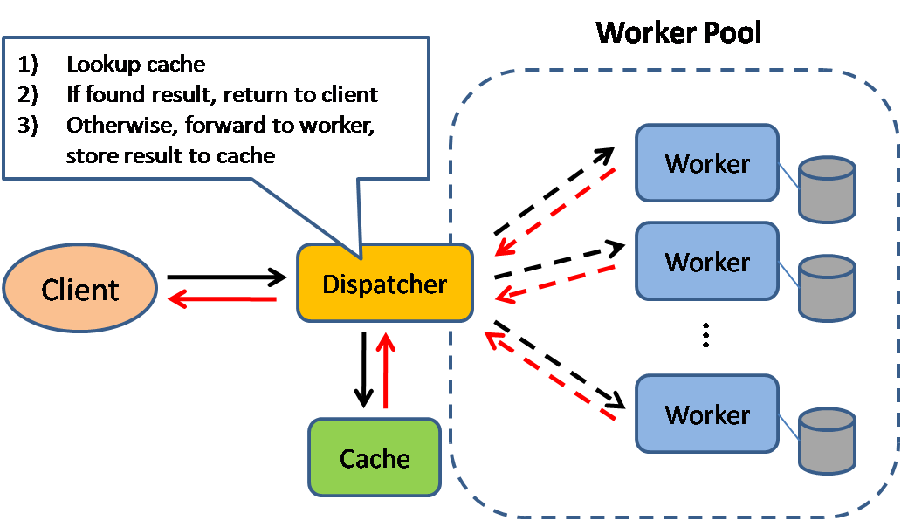
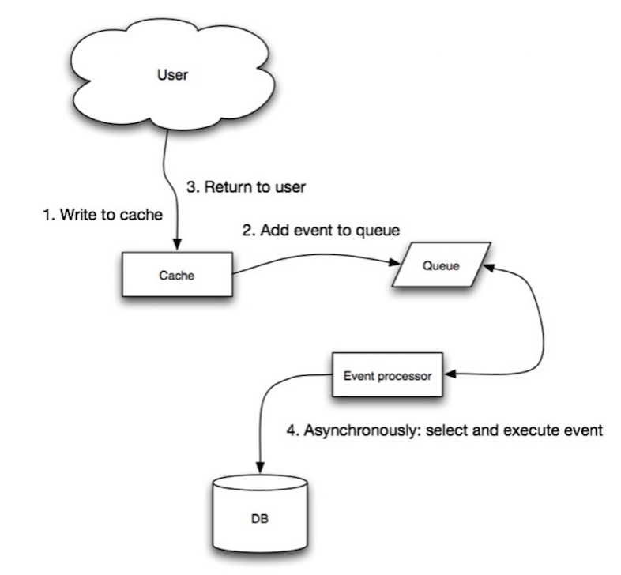

Cache

Source: Scalable system design patterns
Caching improves page load times and can reduce the load on your servers and databases. In this model, the dispatcher will first lookup if the request has been made before and try to find the previous result to return, in order to save the actual execution.
Databases often benefit from a uniform distribution of reads and writes across its partitions. Popular items can skew the distribution, causing bottlenecks. Putting a cache in front of a database can help absorb uneven loads and spikes in traffic.
Client caching
Caches can be located on the client side (OS or browser), server side, or in a distinct cache layer.
CDN caching
CDNs are considered a type of cache.
Web server caching
Reverse proxies and caches such as Varnish can serve static and dynamic content directly. Web servers can also cache requests, returning responses without having to contact application servers.
Database caching
Your database usually includes some level of caching in a default configuration, optimized for a generic use case. Tweaking these settings for specific usage patterns can further boost performance.
Application caching
In-memory caches such as Memcached and Redis are key-value stores between your application and your data storage. Since the data is held in RAM, it is much faster than typical databases where data is stored on disk. RAM is more limited than disk, so cache invalidation algorithms such as least recently used (LRU)) can help invalidate 'cold' entries and keep 'hot' data in RAM.
Redis has the following additional features:
Persistence option
Built-in data structures such as sorted sets and lists
There are multiple levels you can cache that fall into two general categories: database queries and objects:
Row level
Query-level
Fully-formed serializable objects
Fully-rendered HTML
Generally, you should try to avoid file-based caching, as it makes cloning and auto-scaling more difficult.
Caching at the database query level
Whenever you query the database, hash the query as a key and store the result to the cache. This approach suffers from expiration issues:
Hard to delete a cached result with complex queries
If one piece of data changes such as a table cell, you need to delete all cached queries that might include the changed cell
Caching at the object level
See your data as an object, similar to what you do with your application code. Have your application assemble the dataset from the database into a class instance or a data structure(s):
Remove the object from cache if its underlying data has changed
Allows for asynchronous processing: workers assemble objects by consuming the latest cached object
Suggestions of what to cache:
User sessions
Fully rendered web pages
Activity streams
User graph data
When to update the cache
Since you can only store a limited amount of data in cache, you'll need to determine which cache update strategy works best for your use case.
Cache-aside

Source: From cache to in-memory data grid
The application is responsible for reading and writing from storage. The cache does not interact with storage directly. The application does the following:
Look for entry in cache, resulting in a cache miss
Load entry from the database
Add entry to cache
Return entry
def get_user(self, user_id):
user = cache.get("user.{0}", user_id)
if user is None:
user = db.query("SELECT FROM users WHERE user_id = {0}", user_id)
if user is not None:
key = "user.{0}".format(user_id)
cache.set(key, json.dumps(user))
return userMemcached is generally used in this manner.
Subsequent reads of data added to cache are fast. Cache-aside is also referred to as lazy loading. Only requested data is cached, which avoids filling up the cache with data that isn't requested.
##### Disadvantage(s): cache-aside
Each cache miss results in three trips, which can cause a noticeable delay.
Data can become stale if it is updated in the database. This issue is mitigated by setting a time-to-live (TTL) which forces an update of the cache entry, or by using write-through.
When a node fails, it is replaced by a new, empty node, increasing latency.
Write-through

Source: Scalability, availability, stability, patterns
The application uses the cache as the main data store, reading and writing data to it, while the cache is responsible for reading and writing to the database:
Application adds/updates entry in cache
Cache synchronously writes entry to data store
Return
Application code:
set_user(12345, {"foo":"bar"})Cache code:
def set_user(user_id, values):
user = db.query("UPDATE Users WHERE id = {0}", user_id, values)
cache.set(user_id, user)Write-through is a slow overall operation due to the write operation, but subsequent reads of just written data are fast. Users are generally more tolerant of latency when updating data than reading data. Data in the cache is not stale.
##### Disadvantage(s): write through
When a new node is created due to failure or scaling, the new node will not cache entries until the entry is updated in the database. Cache-aside in conjunction with write through can mitigate this issue.
Most data written might never be read, which can be minimized with a TTL.
Write-behind (write-back)

Source: Scalability, availability, stability, patterns
In write-behind, the application does the following:
Add/update entry in cache
Asynchronously write entry to the data store, improving write performance
##### Disadvantage(s): write-behind
There could be data loss if the cache goes down prior to its contents hitting the data store.
It is more complex to implement write-behind than it is to implement cache-aside or write-through.
Refresh-ahead

Source: From cache to in-memory data grid
You can configure the cache to automatically refresh any recently accessed cache entry prior to its expiration.
Refresh-ahead can result in reduced latency vs read-through if the cache can accurately predict which items are likely to be needed in the future.
##### Disadvantage(s): refresh-ahead
Not accurately predicting which items are likely to be needed in the future can result in reduced performance than without refresh-ahead.
Disadvantage(s): cache
Need to maintain consistency between caches and the source of truth such as the database through cache invalidation.
Cache invalidation is a difficult problem, there is additional complexity associated with when to update the cache.
Need to make application changes such as adding Redis or memcached.
Source(s) and further reading
From cache to in-memory data grid
Scalable system design patterns
Introduction to architecting systems for scale
Scalability, availability, stability, patterns
Scalability
AWS ElastiCache strategies
Wikipedia)